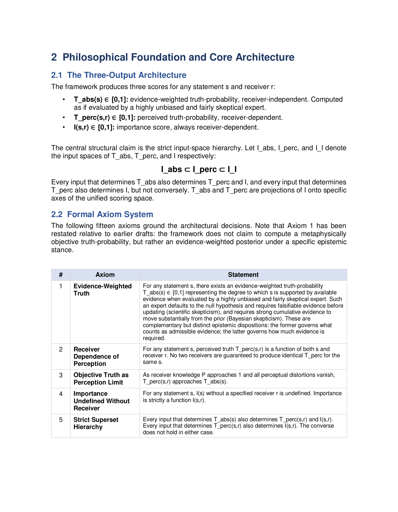
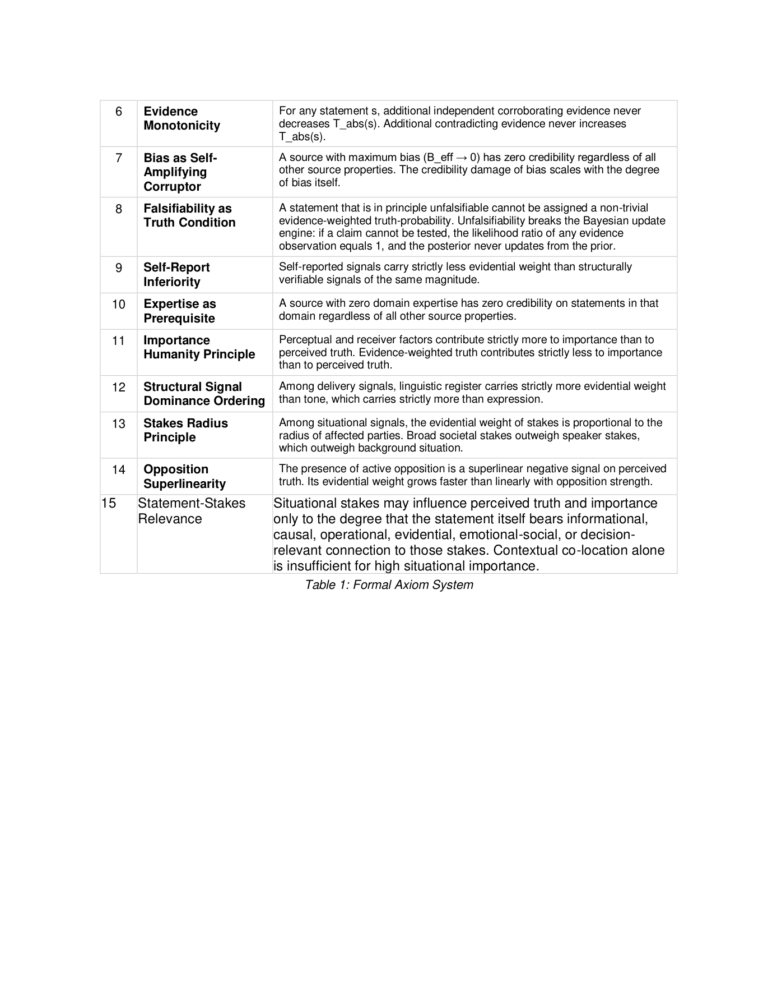
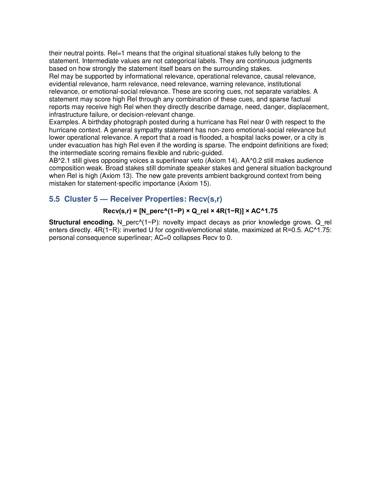
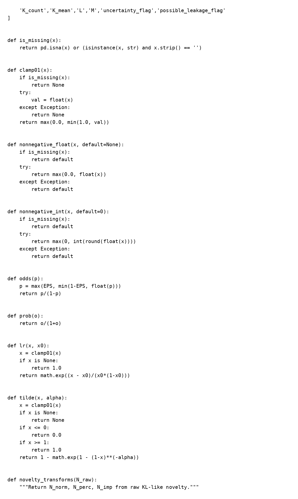
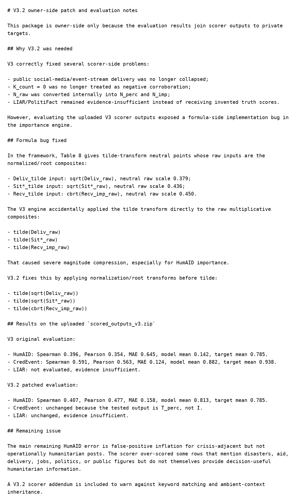
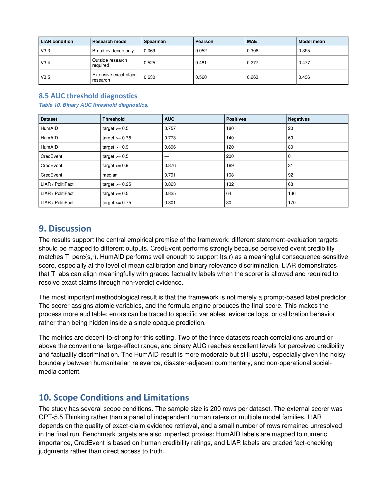
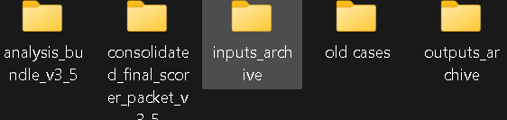

How the Project Changed
The framework did not move directly from an idea to the version used in the demonstration. I developed the mathematical structure, implemented it, tested it, found cases where either the model or the implementation behaved incorrectly, and revised both.
Separating the three questions
The theoretical work began by separating evidence-weighted truth, perceived truth, and importance into three outputs with nested input spaces. The same section begins the formal axiom system used to constrain how those outputs should behave.

Writing failure conditions into the model
The remaining axioms include requirements that unfalsifiable statements should not receive non-trivial evidence-weighted truth merely from internal coherence, and that situational stakes should influence a statement only when the statement itself is relevant to those stakes.

The relevance gate
One failure mode was ambient context: a statement could inherit the importance of a high-stakes situation merely because it appeared near that situation.
I introduced Rel(s,c) so the relevant situational variables are pulled toward their neutral points when the statement itself does not actually bear on the surrounding stakes.

At this point the problem was no longer only: “Can I define the model?” It became: “Does the implementation actually reproduce the model I defined?”
Moving the equations into code
I implemented the scoring architecture in Python. The surviving V3.2 engine includes input validation, odds and probability conversion, cluster-specific likelihood-ratio updates, the importance transform, and separate novelty transformations for perceived truth and importance.

odds(), prob(), the likelihood-ratio
function lr(), the importance
tilde() transform, and the beginning of the novelty
transformation code.
A formula could be right while its implementation was wrong
Evaluating the V3 scorer outputs exposed an implementation error in the importance engine.
The tilde transformation was being applied directly to the raw multiplicative delivery, situation, and receiver composites. The theoretical model instead required their square-root or cube-root normalized forms first.
V3.2 corrected the order of operations. The patch materially changed the HumAID importance evaluation while leaving the perceived-truth evaluation unchanged.

The evidence process changed too
The LIAR/PolitiFact evaluation initially performed poorly when the scorer had only broad evidence. I then required outside research and, later, extensive exact-claim research.
I preserved the progression rather than replacing the earlier runs with only the best result.
| Version | Research mode | Spearman | Pearson | MAE |
|---|---|---|---|---|
| V3.3 | Broad evidence only | 0.069 | 0.052 | 0.306 |
| V3.4 | Outside research required | 0.525 | 0.481 | 0.277 |
| V3.5 | Extensive exact-claim research | 0.630 | 0.560 | 0.263 |

The surviving project structure
I kept separate bundles for analysis, scorer-facing material, inputs, older cases, and outputs rather than treating the final paper as the entire project.

analysis_bundle_v3_5consolidated_final_scorer_packet_v3_5inputs_archiveold casesoutputs_archive
The version I use now is therefore not simply the first formulation written more neatly. Some changes came from mathematical failure cases, some from implementation bugs, and some from empirical evidence that the scoring or research protocol was not yet sufficient.
The next page collects the project materials themselves: papers, code, data and audit artifacts, and the short video walkthrough.
Continue to project materials →